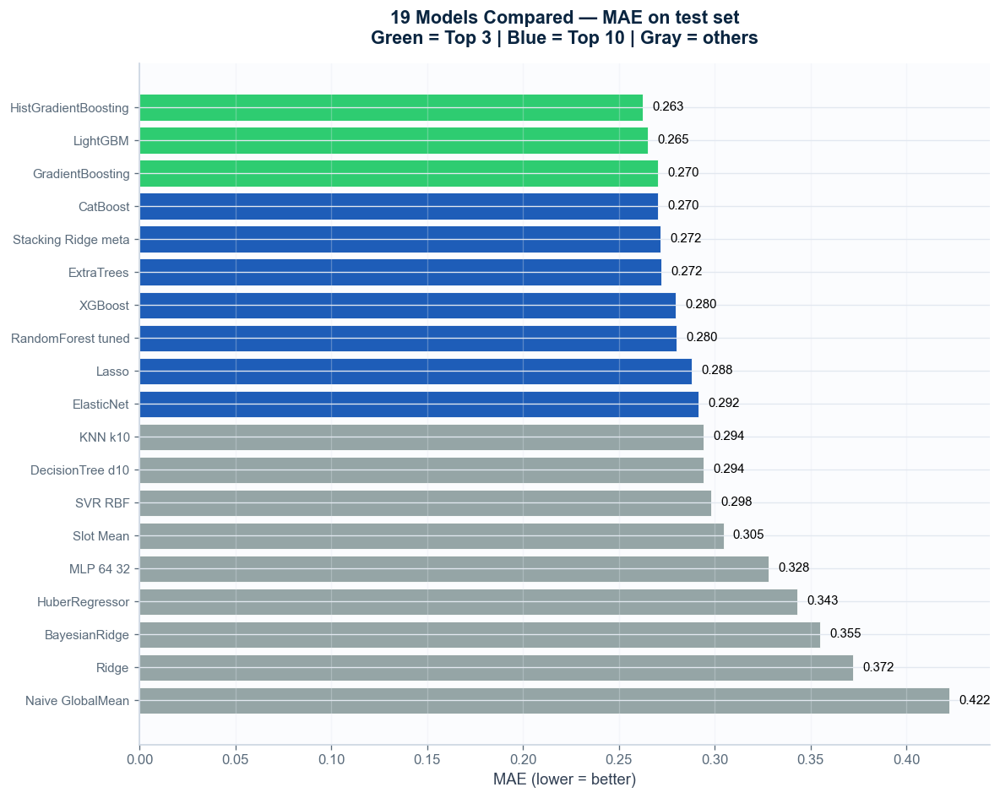
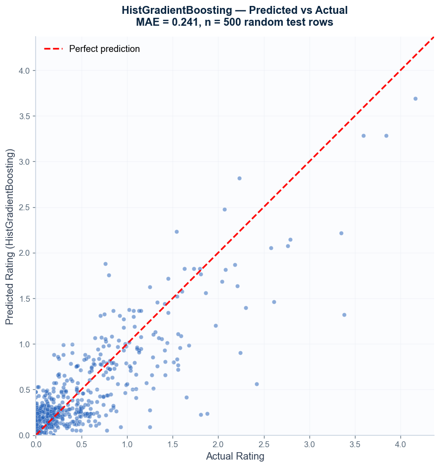
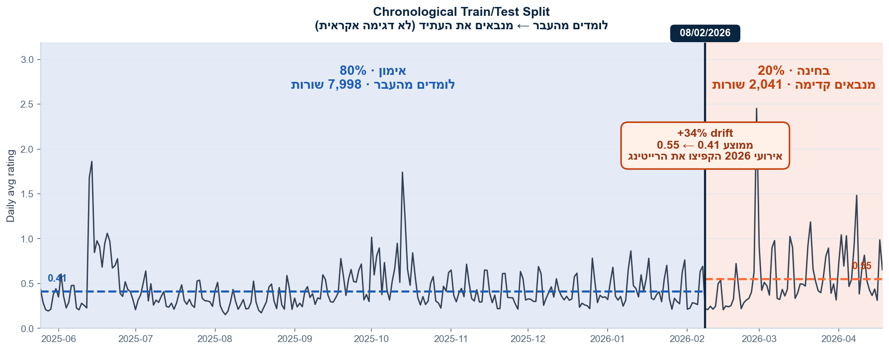
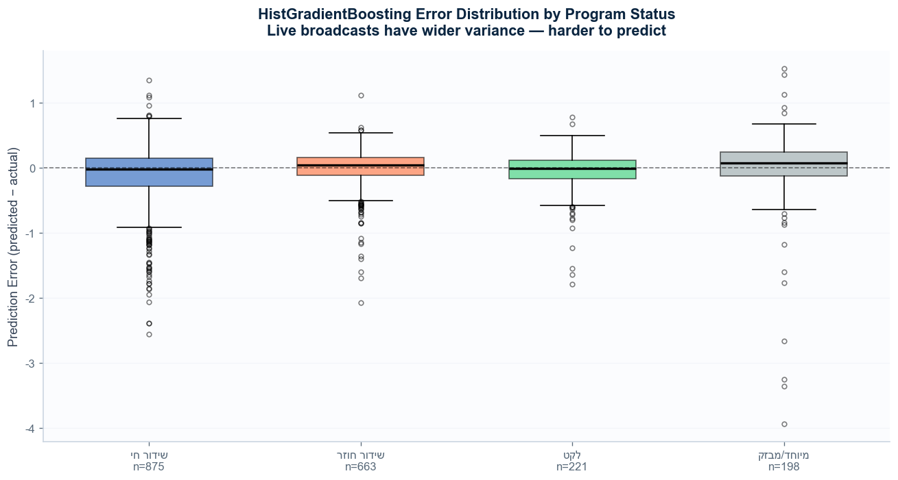
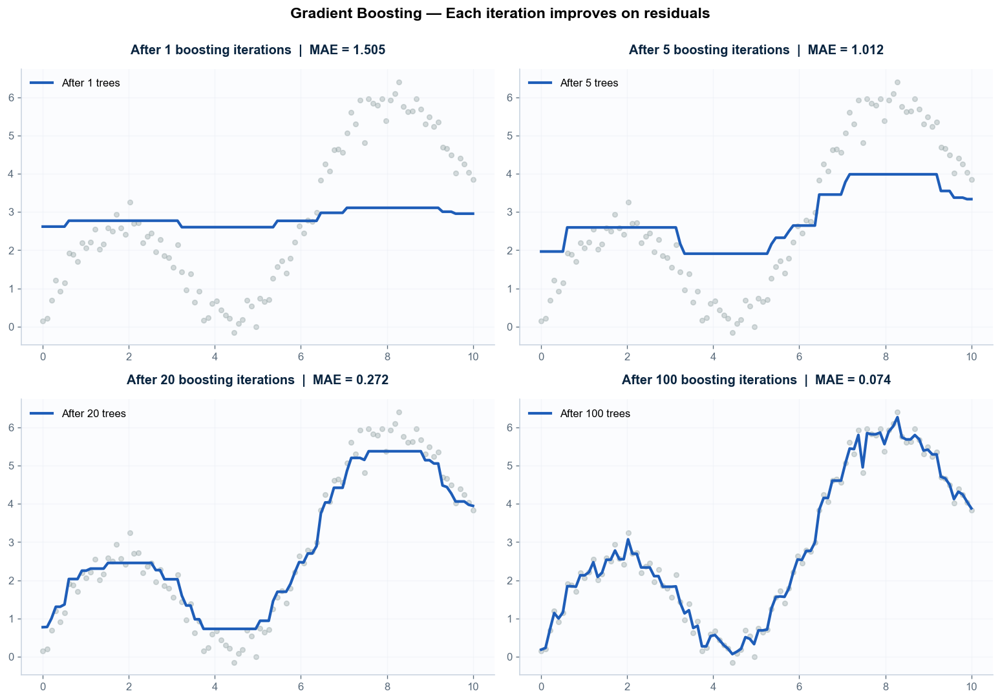
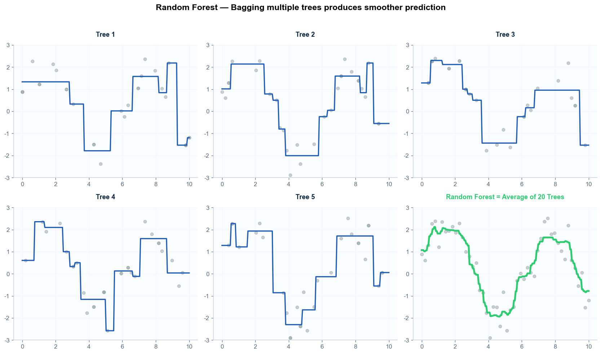
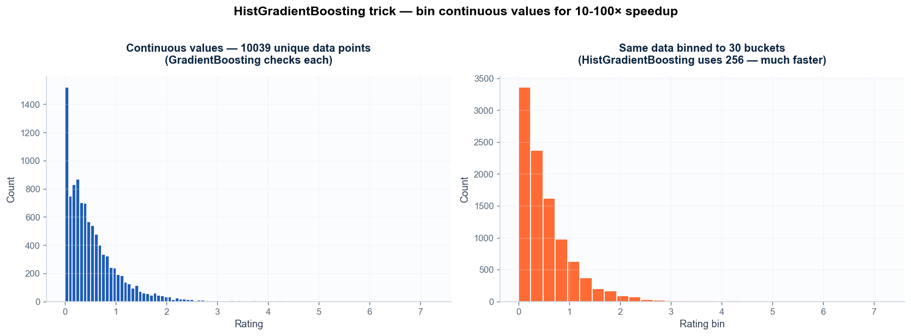
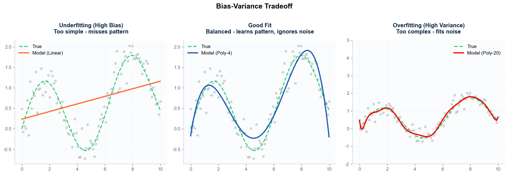

פרוייקט End-to-End — מ-EDA ועד מודל פרודקטיבי באוויר.
תכנון אסטרטגי של ערוץ — תוכניות עבודה, תחזית הכנסות, החלטות לוז.
i24 NEWS משדר 24/7 עם עשרות תוכניות בלוז משתנה. ההחלטות האסטרטגיות שלהם — איזו תוכנית לחזק, מתי להוסיף, מה לבטל — תלויות בחיזוי הרייטינג של חודשים קדימה.
מודל HistGradientBoosting שמאומן על שנת דאטה מלאה ומספק חיזוי לכל תוכנית בכל שעה, יום או חודש — עם רווח-בטחון, ויזואליזציה אינטראקטיבית, והשוואת תרחישים.
מנהל המחקר של i24: "כל הארגון תלוי בנתונים האלה — תחזית הכנסות, הוצאות, תוכניות עבודה ושינויי לוז". האפליקציה הופכת את ההחלטות לנתונים-מבוססים.
MAE על סט הבחינה (חיתוך כרונולוגי 80/20). נמוך = טוב.







